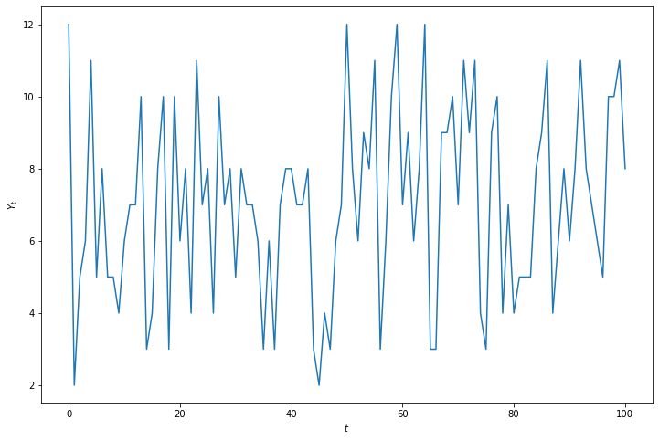
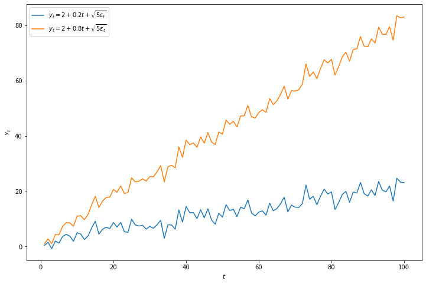
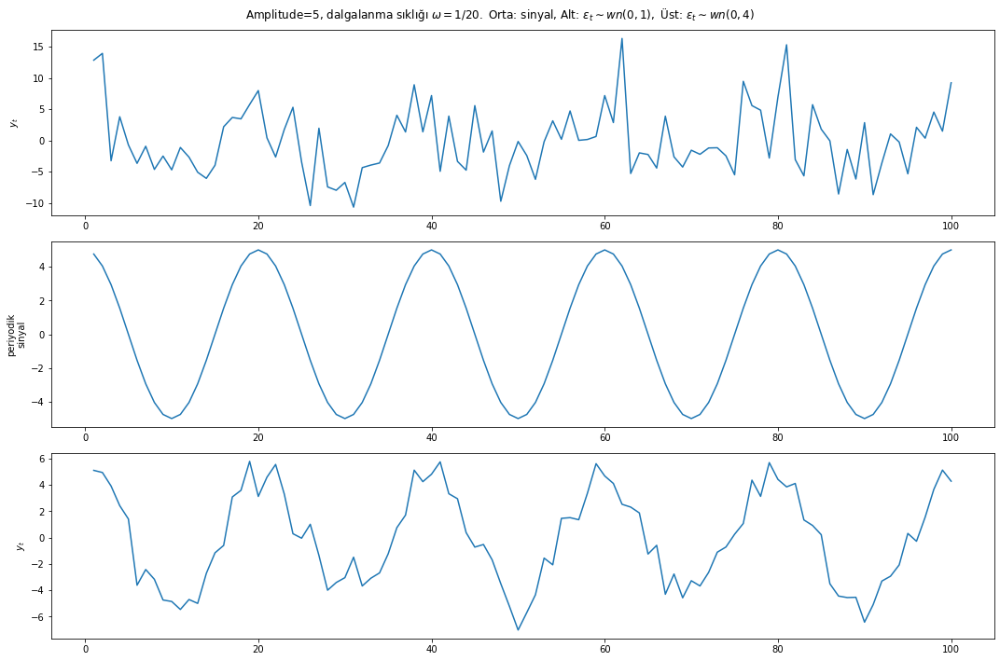
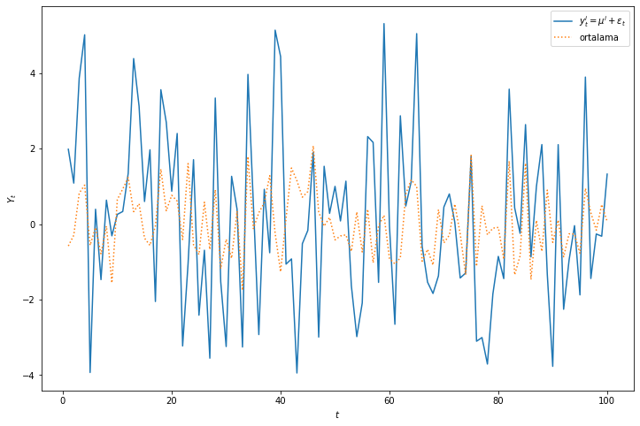
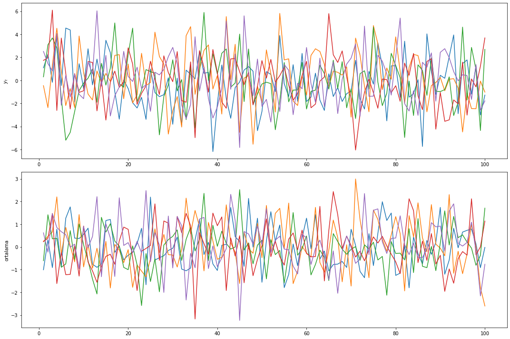
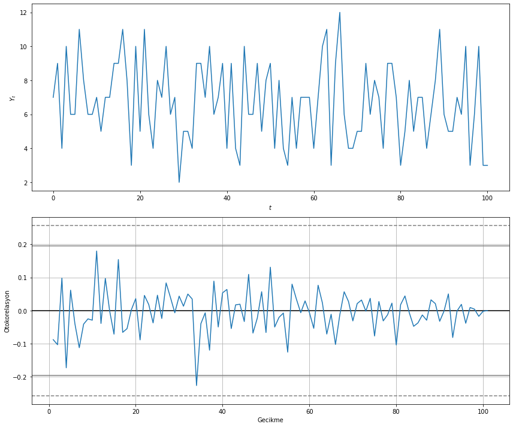

# kütüphanelerin çağırılması
import random
import matplotlib.pyplot as plt
%matplotlib inlineZaman Serileri Analizi 1: Giriş
Zaman serileri
1.Olasılıksal (Stochastic) Süreç
\(t\)(zaman) ile indekslenmiş \(\left\{Y_{t}: t \in \mathbb{T}\right\}\) ile gösterilen tek deşkenli rassal değişkenler kümesine zaman serisi ya da olasılıksal (stochastic) süreç adı verilir.
İndeks kümesi sonlu ya da sonsuz, sürekli ya da kesikli olabilir. Ekonometri ve istatistik alanlarında zaman serisi denildiği zaman genellikle kesikli zaman indeksi anlaşılır. Zaman indeksi kümesinin de birbirine eşit uzaklıkta değerlerden oluştuğu düşünülür ancak bu şart değildir. Biz burada aksi belirtilmedikçe \(t_{i}\) değerlerinin eşit uzaklıklı olduğunu varsayacağız. Zamanın reel sayı olduğu sürekli zaman ile indekslenmiş rassal değişkenleri kümesini \(\{X(t), t \in \mathbb{T}\}\) ile göstereceğiz.
Kesikli zaman için indeks kümesi \(\mathbb{T}=\{0,\pm 1,\pm 2, \ldots\}\) ve sürekli zaman için \(\mathbb{T}=\{-\infty<t<\infty\}\) olarak tanımlanacaktır. Olasılıksal sürecin belirli bir gerçekleşmesini (realizasyonunu) \(\left\{y_{t}: t=1,2, \ldots, T\right\}\) ya da \(\left\{y_{t}\right\}_{t=1}^{T}\) ile göstereceğiz. t zamanında gözlemlenen değerler skalar (univariate) ya da vektör değerli (multivariate) olabilir. İlk olarak skalar zaman serilerini inceleyeceğiz. Yukarıda yaptığımız zaman serisi tanımında her \(t\) zamanında bir rassal değişkenin gözlemlendiğini ve belirli bir süre sonra bu değerlerin tarihinden hareketle bir gözlem kümesinin ortaya çıktığını söyledik. Açıktır ki bu zaman serisinin olasılık yasalarıyla uyumlu bir şekilde ortaya çıkmasını gerektirir.
\(Y\)’nin sürekli, \(t\)’nin ise kesikli olduğunu varsayarsak her t zamanındaki değer için bir marjinal olasılık yoğunluk fonksiyonu tanımlanabilir:
\[\begin{array}{c} f\left(y_{t}\right) \geq 0 \\ \int_{-\infty}^{\infty} f\left(y_{t}\right) d y_{t}=1 \end{array}\]
Marjinal yoğunluktan hareketle, eğer tanımlanabiliyorsa, zaman serisinin ortalama fonksiyonu tanımlanabilir:
\[\mu_{t} \equiv \mathrm{E}\left(Y_{t}\right)=\int_{-\infty}^{\infty} y_{t} f\left(y_{t}\right) d y_{t}\]
Burada her \(t\) zamanında aynı yoğunluk fonksiyonundan sayıların çekildiği varsayılmıştır. Başka bir ifadeyle, zaman serisi türdeş dağılmıştır.
2.Beklenen Değer, Değişinti (Variance)
Zaman serisinin koşulsuz varyansı ise aşağıdaki gibi tanımlanabilir:
\[\begin{aligned} \gamma_{0 t} &=\mathrm{E}\left[\left(Y_{t}-\mu_{t}\right)^{2}\right] \\ &=\int_{-\infty}^{\infty}\left(y_{t}-\mu_{t}\right)^{2} f\left(y_{t}\right) d y_{t} \end{aligned}\]
\(\left\{Y_{t}: t \in \mathbb{T}\right\}\) gibi bir zaman serisinin ortak yoğunluk fonksiyonu ise her t zamanında belirli değerleri aşmama olasılığı olarak tanımlanabilir:
\[F\left(y_{1}, y_{2}, \ldots, y_{T}\right)=P\left(Y_{1} \leq y_{1}, Y_{2} \leq y_{2}, \ldots, Y_{T} \leq y_{T}\right)\]
Zaman serisi değerleri arasındaki bağımlılık genellikle bu ortak yoğunluk fonksiyonunun açıkça yazılabilmesine izin vermez.
Eğer rassal değişkenlerin birbirinden bağımsız ve türdeş dağıldığı biliniyorsa, bağımsızlık özelliğinden hareketle, ortak yoğunluk fonksiyonu marjinal yoğunlukların çarpımı olarak yazılabilir.
\[F\left(y_{1}, y_{2}, \ldots, y_{T}\right)=\prod_{t=1}^{T} f(y) d y\]
Örnek: İki zar atımı deneyi
Her \(t\) zamanında iki zarın atıldığını ve \(Y_{t}\)’nin bu zarların toplamını gösterdiğini düşünelim. Bu durumda \(Y_{t}\)’nin alabileceği değerler \(\{2,3, \ldots, 12\}\) olacaktır. \(T = 100\) için bu deneyin tekrarlandığını düşünelim. Şekil bu deneyin bir realizasyonunu göstermektedir.
Bunu Python ile aşağıdaki gibi kodlayabiliriz:
# iki zar atımı için rastgele sayı toplamını veren fonksiyon
def iki_zar_atımı():
return random.randint(1,6) + random.randint(1,6)
# deney parametreleri
T = 100
deney_çıktısı = []
deney_sırası = []
# T = 100 kadar zar atımı
for a in range(101):
i = iki_zar_atımı()
deney_çıktısı.append(i)
deney_sırası.append(a)
# deney çıktısının çizdirilmesi
plt.figure(figsize=(12,8));
plt.plot(deney_sırası, deney_çıktısı);
plt.xlabel("$t$");
plt.ylabel("$Y_{t}$");
3.Pür Rassal Süreç
\(\left\{\epsilon_{t}: t=1,2, \ldots\right\}\) ile gösterilen bir olasılıksal süreç aşağıdaki koşulları sağlıyorsa pür rassal süreç (white noise process) adı verilir:
\[\begin{aligned} \mathrm{E}\left[\epsilon_{t}\right] &=0 \\ \operatorname{Var}\left(\epsilon_{t}\right) &=\sigma^{2} \\ \operatorname{Cov}\left(\epsilon_{t}, \epsilon_{s}\right) &=0, \quad t \neq s \end{aligned}\]
Bu süreci kısaca \(\epsilon_{t} \sim w n\left(0, \sigma^{2}\right)\) ile göstereceğiz.
Yukarıdaki koşullara ek olarak \(\left\{\epsilon_{t}\right\}_{t=1}^{T}\) süreci ortalaması 0 ve değişintisi \(\sigma^{2}\) olan bir normal dağılıma uyuyorsa bu sürece Normal (Gaussian) Pür Rassal Süreç adı verilir ve \(\epsilon_{t} \sim G W N\left(0, \sigma^{2}\right)\) ile gösterilir. Eger türdeş ve bağımsız (iid) dağılyorsa kısaca \(\epsilon_{t} \sim\) iid \(N\left(0, \sigma^{2}\right)\) ile gösterilir.
Örnek: Deterministik Doğrusal Trend Süreci
Eğimleri farklı iki doğrusal trend serisini aşağıdaki eşitliğe göre çizelim:
\[y_{t}=\beta_{0}+\beta_{1} t+\epsilon_{t}, \quad \epsilon_{t} \sim w n\left(0, \sigma^{2}\right)\]
# numpy kütüphanesinin çağırılması
import numpy as np
# parametreler
ortalama = 0
standart_sapma = 1
örnek_sayısı = 100
beyaz_gürültü_hata_terimi = np.random.normal(ortalama, standart_sapma, size=örnek_sayısı)
zaman_indisi = []
for a in range(1,101):
zaman_indisi.append(a)
# iki doğrusal trend serisinin türetilmesi
y1 = 2+0.2*np.array(zaman_indisi)+np.sqrt(5)*beyaz_gürültü_hata_terimi
y2 = 2+0.8*np.array(zaman_indisi)+np.sqrt(5)*beyaz_gürültü_hata_terimi
# serilerin çizdirilmesi
plt.figure(figsize=(12,8));
plt.plot(zaman_indisi, y1, label="$y_{t}=2+0.2 t+\sqrt{5 \epsilon_{t}}$");
plt.plot(zaman_indisi, y2, label="$y_{t}=2+0.8 t+\sqrt{5 \epsilon_{t}}$");
plt.legend();
plt.xlabel("$t$");
plt.ylabel("$Y_{t}$");
Örnek: Sinyal+Şok
Şokların içerildiği, farklı şoklar altında sinyal örneği aşağıdaki eşitliğe göre çizilmiştir:
\[y_{t}=5 \cos (2 \pi t / 20)+\epsilon_{t}, \quad \epsilon_{t} \sim w n\left(0, \sigma^{2}\right)\]
# beyaz gürültü hata terimleri için parametreler
örnek_sayısı = 100
ortalama_alt = 0
standart_sapma_alt = 1
beyaz_gürültü_hata_terimi_alt = np.random.normal(ortalama_alt, standart_sapma_alt, size=örnek_sayısı)
ortalama_üst = 0
standart_sapma_üst = 4
beyaz_gürültü_hata_terimi_üst = np.random.normal(ortalama_üst, standart_sapma_üst, size=örnek_sayısı)
# zaman indisi
zaman_indisi = []
for a in range(1,101):
zaman_indisi.append(a)
# şokların olmadığı sinyal
y1 = 5*np.cos(2*np.pi*np.array(zaman_indisi)/20)
# şokların olduğu durum
y2 = 5*np.cos(2*np.pi*np.array(zaman_indisi)/20)+beyaz_gürültü_hata_terimi_alt
# şokların olduğu durum
y3 = 5*np.cos(2*np.pi*np.array(zaman_indisi)/20)+beyaz_gürültü_hata_terimi_üst
# sinyal ve şokların çizdirilmesi
fig, (ax1, ax2, ax3) = plt.subplots(3, 1, figsize=(15,10));
fig.suptitle("Amplitude=5, dalgalanma sıklığı $\omega=1 / 20 .$ Orta: sinyal, Alt: $\epsilon_{t} \sim w n(0,1),$ Üst: $\epsilon_{t} \sim w n(0,4)$");
ax1.plot(zaman_indisi, y3);
ax1.set_ylabel('$y_{t}$');
ax2.plot(zaman_indisi, y1);
ax2.set_ylabel('periyodik\nsinyal');
ax3.plot(zaman_indisi, y2);
ax3.set_ylabel('$y_{t}$');
plt.tight_layout();
plt.show();
4.Kesin Durağanlık
Her zaman indeksi kümesi
\[1 \leq t_{1}<t_{2}<\ldots<t_{k}\]
için \(y_{t_{1}}, y_{t_{2}}, \ldots, y_{t_{k}}\) ’nin ortak dağılımı, her \(h \geq 1\) için,
\[y_{t_{1}+h}, y_{t_{2}+h}, \cdots, y_{t_{k}+h}\]
’nin ortak dağılımı ile aynı ise \(\left\{y_{t}: t=1,2, \ldots\right\}\) zaman serisi kesin durağandır.
Bu tanıma göre bir olasılıksal süreç ancak ve ancak ortak dağılımı (ya da ortak yoğunluk fonksiyonu) her zaman indeksi kümesi için türdeş ise kesin durağandır. Zaman serisi içindeki dinamik korelasyonun yapısı zamanla birlikte değişmez, aynıdır. Kesin durağanlığın pratikte gösterilmesi oldukça zordur. \(T\) elemanlı bir zaman serisinden hareketle \(T(T-1) / 2\) parametrenin tahminini gerektirir. Bu nedenle, genellikle, daha zayıf bir durağanlık tanımı kullanılır.
5.Ortak Değişinti (Covariance) Durağanlık
Bir zaman serisi, \(\left\{y_{t}\right\}_{t=1}^{T}\), aşağıdaki koşulları sağlıyorsa ortak değişinti durağandır:
\(\mathrm{E}\left(y_{t}\right)=\mu \quad\) her \(t\) için
\(\operatorname{Cov}\left(y_{t}, y_{t-h}\right)=\mathrm{E}\left[\left(y_{t}-\mu\right)\left(y_{t-h}-\mu\right)\right]\)
\(=\gamma_{h} \quad\) her \(t\) ve herhangi bir tamsayı \(h\) için
Ortak değişinti durağanlık, zayıf durağanlık olarak da isimlendirilir. Kesin durağanlık zayıf durağanlığı gerektirir ancak tersi doğru olmayabilir. Durağan bir zaman serisinin birinci ve ikinci momentleri zamana bağlı değildir. Koşulsuz ortalama sabittir ve zaman içinde değişmez. Benzer şekilde koşulsuz değişinti, pozitif, sonlu bir sayıya eşittir ve zamanla değişmez. Özdeğişim (autocovariance) ise sadece iki zaman noktası arasındaki uzaklığa, h, bağlıdır, zamanla birlikte değişmez.
6.Döngellik (Ergodicity)
Bir ortak değişinti-durağan süreç aşağıdaki koşulu sağlıyorsa döngeldir (ergodic):
\[T \rightarrow \infty, \quad \bar{y}=\frac{1}{T} \sum_{t=1}^{T} y_{t} \stackrel{p}{\longrightarrow} \mathrm{E}\left(Y_{t}\right)\]
Bu koşulun sağlanması için otokovaryansların toplamının sonlu olması yeterlidir:
\[\sum_{j=0}^{\infty}\left|\gamma_{j}\right|<\infty\]
İkinci moment ergodikliği için ise aşağıdaki koşulun sağlanması gerekir:
\[\frac{1}{T-j} \sum_{t=j+1}^{T}\left(Y_{t}-\mu\right)\left(Y_{t-j}-\mu\right) \stackrel{p}{\longrightarrow} \gamma_{j}\]
Döngellik: Örnek
Bir zaman serisi ortak değişinti durağan olabilir ancak döngel olmayabilir. Örneğin, aşağıdaki olasılıksal süreci düşünelim:
\[y_{t}^{i}=\mu^{i}+\epsilon_{t}\]
Burada \(\mu^{i}\) ve \(\epsilon_{t}\) birbirinden bağımsız iki rassal değişken olsun:
\[\begin{aligned} \mu^{i} & \sim N\left(0, \sigma_{1}^{2}\right) \\ \epsilon_{t} & \sim \operatorname{iid}\left(0, \sigma_{2}^{2}\right) \end{aligned}\]
\(\left\{y_{t}\right\}\) serisinin ortak değişinti durağan olduğu kolayca gösterilebilir:
\[\mathrm{E}\left(y_{t}\right)=\mathrm{E}\left(\mu^{i}\right)+\mathrm{E}\left(\epsilon_{t}\right)=0\]
\[\begin{array}{c} \operatorname{Var}\left(y_{t}\right)=\mathrm{E}\left[\left(\mu^{i}+\epsilon_{t}\right)^{2}\right]=\sigma_{1}^{2}+\sigma_{2}^{2} \\ \operatorname{Cov}\left(y_{t}, y_{t-h}\right)=\mathrm{E}\left[\left(\mu^{i}+\epsilon_{t}\right)\left(\mu^{i}+\epsilon_{t-h}\right)\right]=\sigma_{1}^{2}, \quad h \neq 0 \end{array}\]
Döngellik için \(T \rightarrow \infty\) iken zaman ortalamalarının beklenti değerine yaklaşması gerekir. \(y_{t}^{i}\) ’nin zaman ortalaması alınırsa:
\[\begin{aligned} \frac{1}{T} \sum_{t=1}^{T} y_{t}^{i} &=\frac{1}{T} \sum_{t=1}^{T}\left(\mu^{i}+\epsilon_{t}\right) \\ &=\mu^{i}+\frac{1}{T} \sum_{t=1}^{T} \epsilon_{t} \\ &=\mu^{i} \neq 0 \end{aligned}\]
olduğu görülür. Açıktır ki \(y_{t}^{i}\) serisi durağan olduğu halde döngel değildir. Serinin ortalaması sıfıra değil \(\mu^{i}\) değerine yaklaşmaktadır.
Serinin benzetimini (simulation) Python ile yapabilir, farklı realizasyonlarını türetebiliriz:
# ortalama ve beyaz gürültü hata terimi
örnek_sayısı = 100
ortalama = 0
standart_sapma1 = 1
standart_sapma2 = 2
ortalama_serisi = np.random.normal(ortalama, standart_sapma1, size=örnek_sayısı)
beyaz_gürültü_hata_terimi = np.random.normal(ortalama, standart_sapma2, size=örnek_sayısı)
# zaman indisi
zaman_indisi = []
for a in range(1,101):
zaman_indisi.append(a)
# serinin türetilmesi
yi = ortalama_serisi + beyaz_gürültü_hata_terimi
# tek bir serinin realizasyonu
plt.figure(figsize=(12,8));
plt.plot(zaman_indisi, yi, label="$y_{t}^{i}=\mu^{i}+\epsilon_{t}$");
plt.plot(zaman_indisi, ortalama_serisi, ':', label="ortalama");
plt.legend();
plt.xlabel("$t$");
plt.ylabel("$Y_{t}$");
Serinin 5 farklı realizasyonu:
# serilerin türetilmesi
ortalama_serisi1 = np.random.normal(ortalama, standart_sapma1, size=örnek_sayısı)
beyaz_gürültü_hata_terimi1 = np.random.normal(ortalama, standart_sapma2, size=örnek_sayısı)
y1 = ortalama_serisi1 + beyaz_gürültü_hata_terimi1
ortalama_serisi2 = np.random.normal(ortalama, standart_sapma1, size=örnek_sayısı)
beyaz_gürültü_hata_terimi2 = np.random.normal(ortalama, standart_sapma2, size=örnek_sayısı)
y2 = ortalama_serisi2 + beyaz_gürültü_hata_terimi2
ortalama_serisi3 = np.random.normal(ortalama, standart_sapma1, size=örnek_sayısı)
beyaz_gürültü_hata_terimi3 = np.random.normal(ortalama, standart_sapma2, size=örnek_sayısı)
y3 = ortalama_serisi3 + beyaz_gürültü_hata_terimi3
ortalama_serisi4 = np.random.normal(ortalama, standart_sapma1, size=örnek_sayısı)
beyaz_gürültü_hata_terimi4 = np.random.normal(ortalama, standart_sapma2, size=örnek_sayısı)
y4 = ortalama_serisi4 + beyaz_gürültü_hata_terimi4
ortalama_serisi5 = np.random.normal(ortalama, standart_sapma1, size=örnek_sayısı)
beyaz_gürültü_hata_terimi5 = np.random.normal(ortalama, standart_sapma2, size=örnek_sayısı)
y5 = ortalama_serisi5 + beyaz_gürültü_hata_terimi5
# serilerin çizdirilmesi
fig, (ax1, ax2) = plt.subplots(2, 1, figsize=(15,10));
ax1.plot(zaman_indisi, y1);
ax1.plot(zaman_indisi, y2);
ax1.plot(zaman_indisi, y3);
ax1.plot(zaman_indisi, y4);
ax1.plot(zaman_indisi, y5);
ax1.set_ylabel('$y_{t}$');
ax2.plot(zaman_indisi, ortalama_serisi1);
ax2.plot(zaman_indisi, ortalama_serisi2);
ax2.plot(zaman_indisi, ortalama_serisi3);
ax2.plot(zaman_indisi, ortalama_serisi4);
ax2.plot(zaman_indisi, ortalama_serisi5);
ax2.set_ylabel('ortalama');
plt.tight_layout();
Şekilden görüldüğü gibi ortalamalar sıfıra değil, normal dağılımdan çekilen rassal sayılara yakınsamaktadır.
7.Özdeğişim (Autocovariance) Fonksiyonu
Aralarındaki uzaklik \(h=t-s\) olan iki zaman serisi, \(Y_{t}\) ve \(Y_{s}\) arasındaki ortak değişintiye:
\[\gamma_{h}=\operatorname{Cov}\left(Y_{t}, Y_{s}\right)=\mathrm{E}\left[\left(Y_{t}-\mathrm{E}\left(Y_{t}\right)\right)\left(Y_{s}-\mathrm{E}\left(Y_{s}\right)\right)\right]\]
\(h\) özdeğişim (autocovariance) adı verilir.
Özdeğişim hem uzaklığa hem de zamana bağlı olabilir. Süreç ortak değişinti durağansa her \(t\) için \(\mathrm{E}\left(Y_{t}\right)=\mu\) olacağından:
\[\gamma_{h}=\mathrm{E}\left[\left(Y_{t}-\mu\right)\left(Y_{t-h}-\mu\right)\right]\]
yazılabilir. Bu durumda özdeğişim sadece \(h\)’ye bağlıdır.
Örneklem özdeğişim fonksiyonu:
\[\hat{\gamma}_{h}=\frac{1}{T} \sum_{t=h+1}^{T}\left(y_{t}-\bar{y}\right)\left(y_{t-h}-\bar{y}\right)\]
kullanılarak tutarlı bir şekilde tahmin edilebilir. Burada \(\bar{y}=\frac{1}{T} \sum_{t=1}^{T} y_{t}\) örneklem ortalamasidir.
8.Özilinti Fonksiyonu (Autocorrelation Function-ACF)
Bir zaman serisinin özilinti fonksiyonu aşağıdaki gibi tanımlanır:
\[\rho_{h}=\frac{\operatorname{Cov}\left(y_{t}, y_{t-h}\right)}{\sqrt{\operatorname{Var}\left(y_{t}\right) \operatorname{Var}\left(y_{t-h}\right)}}\]
Durağan süreçler için:
\[\rho_{h}=\frac{\gamma_{h}}{\gamma_{0}}\]
yazılabilir. Bu durumda ACF sadece h’ye bağlı olarak değişir.
\(T\) gözlemden oluşan bir zaman serisi gerçekleşmesinden hareketle, \(\rho_{h}\) aşağıda formülü verilen örneklem otokorelasyon fonksiyonu ile tutarlı bir şekilde tahmin edilebilir:
\[\hat{\rho}_{h}=\frac{\hat{\gamma}_{h}}{\hat{\gamma}_{0}}\]
9.Dizi İlinti Grafiği (Correlogram)
Bir zaman serisi gerçekleşmesinin örneklem otokorelasyonlarının \(h=1,2, \ldots\) uzakliğına göre grafigine dizi ilinti grafiği (correlogram) adı verilir.
Büyük örneklemlerde Merkezi Limit Teoremi’nden hareketle:
\[\hat{\rho}_{j} \sim N\left(0, \frac{1}{T}\right)\]
yazılabilir (Not: \(\left.\sqrt{T} \hat{\rho}_{j} \sim N(0,1)\right)\).
Öyleyse, sıfır çevresinde %95 güven aralığı \(\pm \frac{1.96}{\sqrt{T}}\) formülüyle bulunabilir.
10.Box-Pierce Test İstatistiği
İlk \(k\) özilintinin sıfır olup olmadığını
\[H_{0}: \rho_{1}=\rho_{2}=\ldots=\rho_{k}=0\] \[H_{1}: \rho_{j} \neq 0,\] herhangi bir j için.
test etmek amacıyla Box-Pierce tarafından portmanto istatistiği önerilmiştir:
\[Q(k)=T \sum_{j=1}^{k} \hat{\rho}_{j}^{2}\]
\(Q(k)\) istatistigi bos hipotez altında asimptotik olarak \(k\) serbestlik derecesi ile ki-kare dağılımına uyar.
Box-Pierce test istatistiği Ljung-Box tarafından sonlu örneklem performansını arttırmak amacıyla aşağıdaki gibi değiştirilmiştir:
\[L B(k)=T(T+2) \sum_{j=1}^{k} \frac{\hat{\rho}_{j}^{2}}{T-j}\]
Örnek: İki Zar Atımı Deneyi
\(y_{t}\)’nin \(t\) zamanında atılan iki zardan üste gelen rakamların toplamını gösterdiğini düşünelim. Zar atımı deneyi birbirinden bağımsız bir şekilde yapıldığından \(y_{t}\) ile \(y_{s}\) arasındaki özilinti sıfırdır.
# veri işleme
import pandas as pd
from pandas.plotting import autocorrelation_plot
# deney parametreleri
T = 100
deney_çıktısı = []
deney_sırası = []
# T = 100 kadar zar atımı
for a in range(101):
i = iki_zar_atımı()
deney_çıktısı.append(i)
deney_sırası.append(a)
deney_verisi = pd.DataFrame({'deney_sırası': deney_sırası, 'deney_çıktısı': deney_çıktısı})
# deney çıktısının ve otokorelasyon fonksiyonunun çizdirilmesi
fig, (ax1, ax2) = plt.subplots(2, 1, figsize=(12,10));
ax1.plot(deney_sırası, deney_çıktısı);
ax1.set_xlabel("$t$");
ax1.set_ylabel("$Y_{t}$");
autocorrelation_plot(deney_verisi['deney_çıktısı'], ax=ax2);
ax2.set_xlabel("Gecikme");
ax2.set_ylabel("Otokorelasyon");
plt.tight_layout();